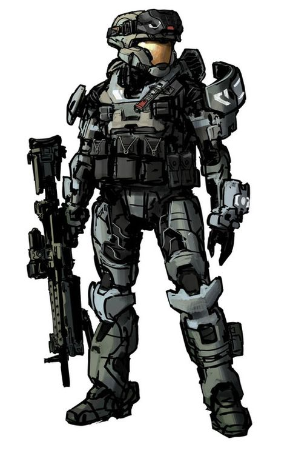

Soldados SPARTAN
Escrito el: 20/10/2521 por: ONI
A lo largo de la historia de la Humanidad, estos han hecho múltiples proyectos para la creación de Super-Soldados que ayudaran a esta especie con diferentes fines bélicos, como el de acabar con la Insurrección Humana del año 2494 o el de combatir al Covenant.
En total se conoce de 4 proyectos de este tipo realizados:
1 Proyecto ORION
2 Programa SPARTAN-II
3 Programa SPARTAN-III
4 Programa SPARTAN-IV